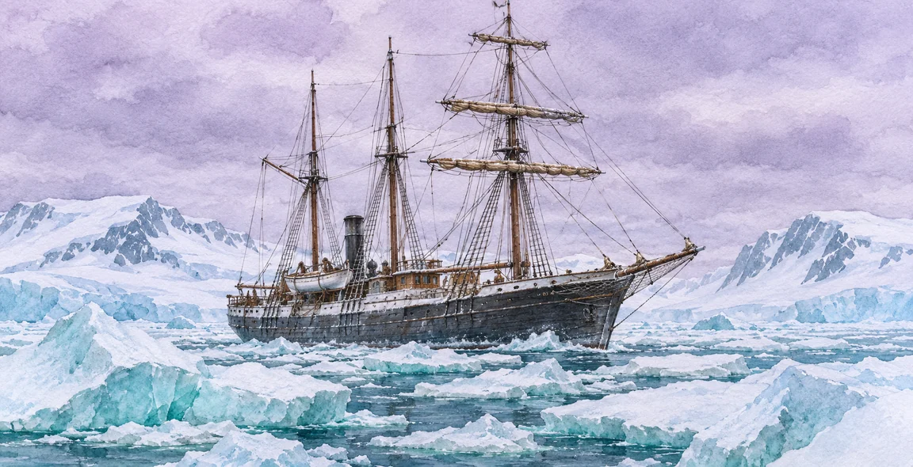

Endurance: Shackleton’s Leadership
읽고 · 말하고 · 생각하는 영어

학습 안내
Endurance: Shackleton's Leadership
인듀런스호의 기적
핵심 단어 · Key Vocabulary
leader - 지도자
leadership - 리더십
explorer - 탐험가
crew - 선원들, 대원들
trapped - 갇힌
survive - 살아남다
encourage - 격려하다
calm - 침착한
decision - 결정
trust - 신뢰
responsibility - 책임
rescue - 구조, 구조하다
회화 패턴 · Speaking Patterns
1. A good leader should ~.
좋은 리더는 ~해야 한다.
A good leader should stay calm.
(좋은 리더는 침착해야 합니다.)
2. The most important quality of a leader is ~.
리더에게 가장 중요한 자질은 ~이다.
The most important quality of a leader is trust.
(리더에게 가장 중요한 자질은 신뢰라고 생각합니다.)
3. If I were a leader, I would ~.
내가 리더라면 ~할 것이다.
If I were a leader, I would listen to my team.
(내가 리더라면 팀의 이야기를 들을 것입니다.)
본문 읽기 · Reading
In 1914, Ernest Shackleton and his crew sailed to Antarctica on the Endurance. Their ship became trapped in ice and was finally destroyed. The crew had to leave the ship and live in a very cold and dangerous place.
Shackleton knew that his people were afraid and tired. However, he stayed calm and encouraged them every day. He cared about his crew and made their safety his first responsibility. He also made difficult decisions when there was no easy answer.
When he realized that help would not come, Shackleton decided to find help himself. He and a few crew members sailed a small boat across a dangerous sea. After a long journey, he returned with help. All of his crew survived. His story teaches us that a good leader gives people hope, takes responsibility, and stays calm in a crisis.
한국어 해석 · Translation
영어 본문을 바탕으로 추가한 해석입니다.
1914년 어니스트 섀클턴과 선원들은 인듀런스호를 타고 남극으로 향했습니다. 배는 얼음에 갇혔고 결국 부서졌습니다. 선원들은 배를 떠나 몹시 춥고 위험한 곳에서 지내야 했습니다.
섀클턴은 대원들이 두려워하고 지쳐 있다는 사실을 알았습니다. 하지만 그는 침착함을 잃지 않고 매일 그들을 격려했습니다. 그는 대원들을 아꼈고 그들의 안전을 최우선으로 삼았습니다. 쉬운 답이 없는 상황에서도 어려운 결정을 내렸습니다.
구조대가 오지 않을 것임을 깨달은 섀클턴은 직접 도움을 구하기로 했습니다. 그는 몇몇 대원과 함께 작은 배를 타고 위험한 바다를 건넜습니다. 긴 여정 끝에 그는 구조대와 함께 돌아왔습니다. 대원들은 모두 살아남았습니다. 이 이야기는 훌륭한 리더가 사람들에게 희망을 주고 책임을 지며 위기 속에서도 침착함을 유지한다는 것을 보여 줍니다.
토론 질문 · Discussion Questions
What makes Shackleton a great leader?
섀클턴을 훌륭한 리더라고 생각하게 하는 것은 무엇인가요?
Have you ever met a person who showed good leadership?
좋은 리더십을 보여준 사람을 만난 적이 있나요?
How can a leader give people hope in a difficult situation?
어려운 상황에서 리더는 어떻게 사람들에게 희망을 줄 수 있을까요?
What kind of leader do you want to be in your family, workplace, or community?
가족, 직장 또는 공동체에서 어떤 리더가 되고 싶나요?
예시 답변 · Sample Answers
I think Shackleton was a great leader because he stayed calm and cared about his crew. He never gave up on them.
섀클턴은 침착함을 유지하고 대원들을 돌보았기 때문에 훌륭한 리더였다고 생각합니다. 그는 대원들을 결코 포기하지 않았습니다.
Yes. I once worked with a person who always listened to others. She encouraged people when they had problems, so everyone trusted her.
네. 저는 다른 사람들의 이야기를 항상 들어주는 사람과 함께 일한 적이 있습니다. 그녀는 사람들이 문제를 겪을 때 격려해 주었기 때문에 모두가 그녀를 신뢰했습니다.
A leader can give people hope by staying positive and showing them what to do. Good words and actions can give people strength.
리더는 긍정적인 태도를 유지하고 사람들에게 무엇을 해야 하는지 보여 줌으로써 희망을 줄 수 있습니다. 좋은 말과 행동은 사람들에게 힘을 줄 수 있습니다.
I want to be a leader who listens to others and cares about people. I also want to be someone who stays calm when problems happen.
저는 다른 사람들의 이야기를 듣고 사람들을 배려하는 리더가 되고 싶습니다. 또한 문제가 생겼을 때 침착함을 유지하는 사람이 되고 싶습니다.
오늘의 메시지 · Today’s Message
When the journey is difficult, a good leader shows the way.
여정이 힘들 때, 좋은 리더는 길을 보여준다.
영작 연습 · Write It Yourself
1. responsibility
2. encourage